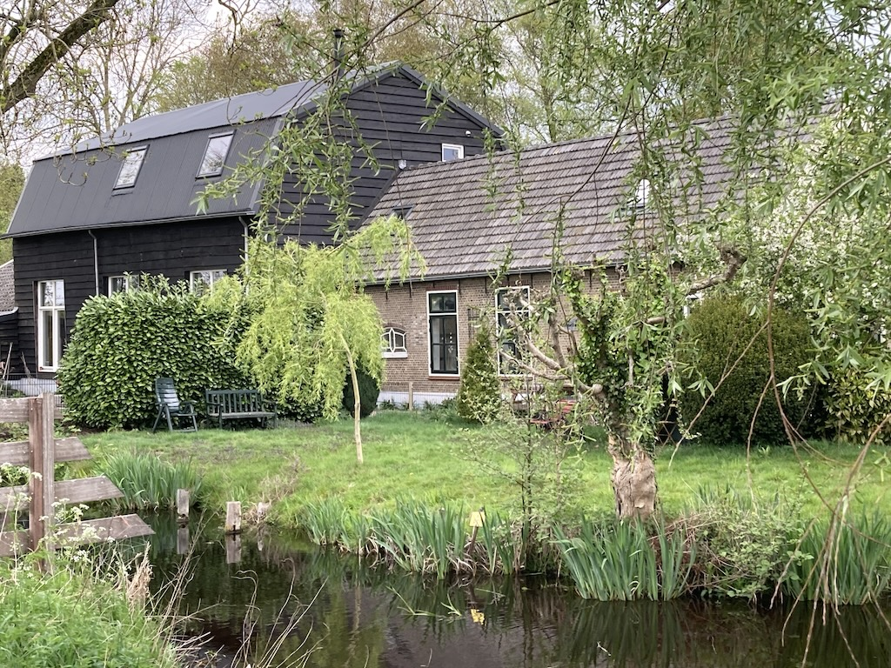
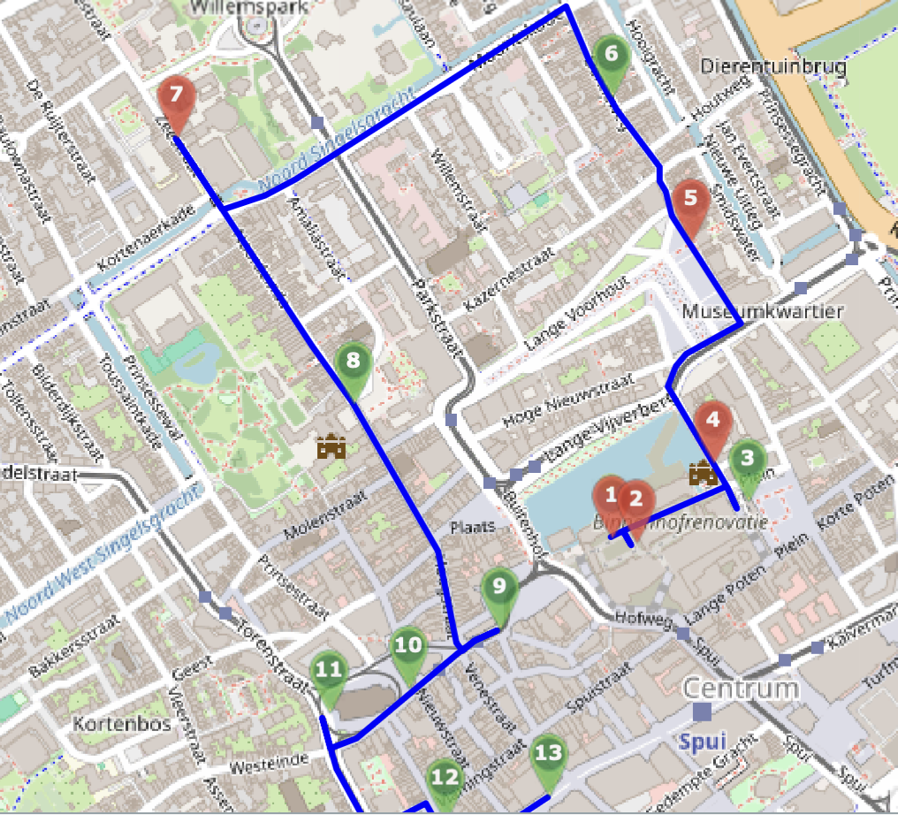
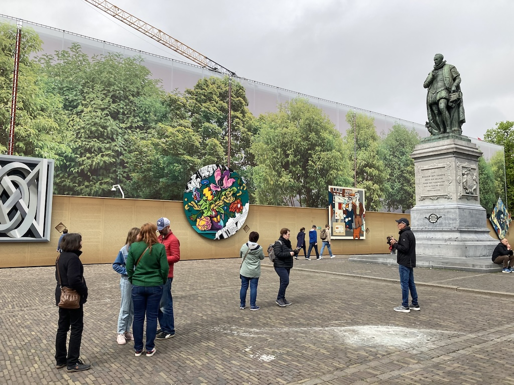

This is the often taken view of Krista's and Paul's cottage and barn. However, this one was taken on Easter Monday 2025 as we returned from a walk that they refer to as 'the triangle'.
We arrived on Thursday 23rd April, having taken the bus to Shoreham, a fast walk from the High Street to the station, a train to Gatwick South Terminal, the Shuttle to the North Terminal, a flight to Schiphol, a train to Rotterdam Centraal and a train to Gouda, where Paul picked us up. We saw Greet and Wim briefly as they dropped off Alfred (the tortoise) while they went off on holiday for a week.
Apart from rain overnight and one morning, the weather was generally good enough to sit (and even eat) outside.
On Easter Sunday some friends who live down the road called. The wife came first and we hid chocolates around the garden while Rowan hid upstairs. Then her husband and son arrived. He and Rowan then spent some time searching for the chocolates, eventually each being given half the total. Luckily it was a warm (in the shelter of the barn), sunny day.
Den Haag (The Hague)
Tuesday started overcast, but brightened later. We all went off to Den Haag, arriving just after eleven o'clock and parking in an underground car park not far from the centre. Our intention had been to follow the route of a sight-seeing tour (as shown on the map and with detailed information here). Paul had installed the app on his phone so that we could be directed around the main buildings of interest. The first stop was the 'Inner Court' (Binnenhof), the seat of government for the Netherlands (even though Amsterdam is the capital). However, it seems that the Binnenhof is undergoing restoration and so our route, which went through the Binnenhof, was closed.
The buildings had screens all around them, so all we could see were the hoardings. The man on the plinth is apparently the first Duke of Orange. Later we stopped at a cafe on this square for some lunch, sitting outside under the trees.
Later still, on our way back to the parking garage, we passed the end of the Binnenhof and took this photo.
So we went off in approximately the right direction, walking through a cruciform shopping arcade called 'The Passage'.
We soon found our way to the palace that the Dutch King uses when in Den Haag and then came across the Oude Stadhuis (the Old City Hall).
When we arrived we saw a bright yellow viewing tower near to the Binnenhof, so on our way back to the car park Rowan and I went up it (no one else wanted to climb the 149 steps). Although it wasn't windy, the top of the tower swayed quite a bit, but the views were good.
Paul drove us back to Gouda station late on Tuesday afternoon. We were a little early and so caught an earlier than planned train to Rotterdam, where we were able to also catch an earlier direct train to Schiphol. So we had plenty of time at the airport. My concern was that we would miss the train from Gatwick, but, as it turned out, we had a 20 minute wait at Gatwick station and then, after a brisk walk from Shoreham station to the High Street, we waited another half hour for the last bus to Steyning. By the time we had walked home from the bus stop it was a quarter past midnight!